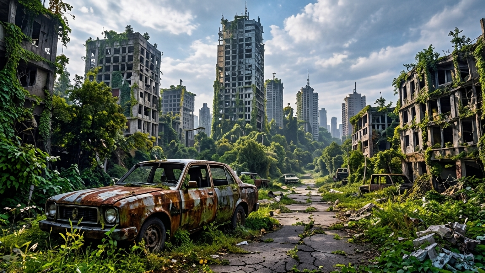
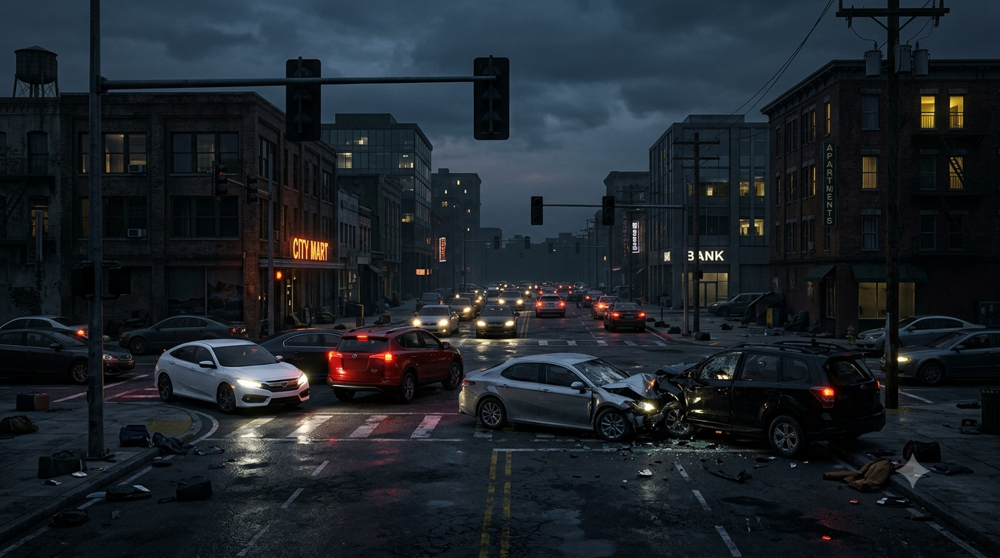
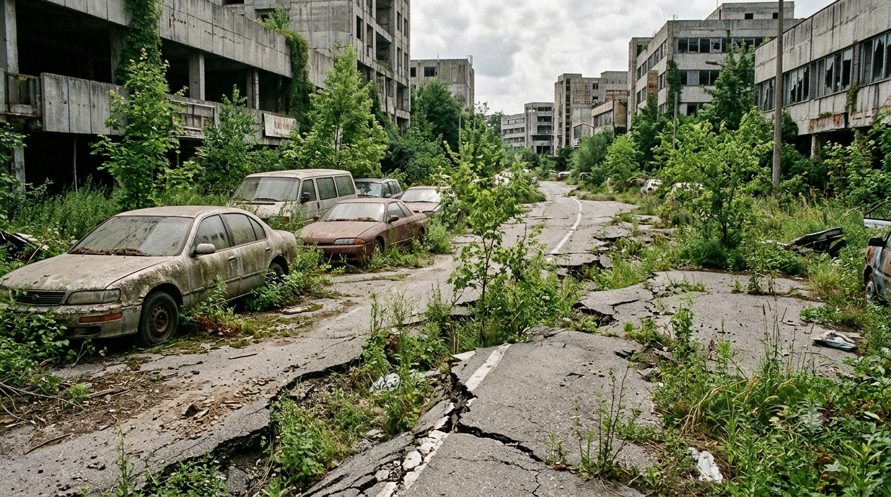
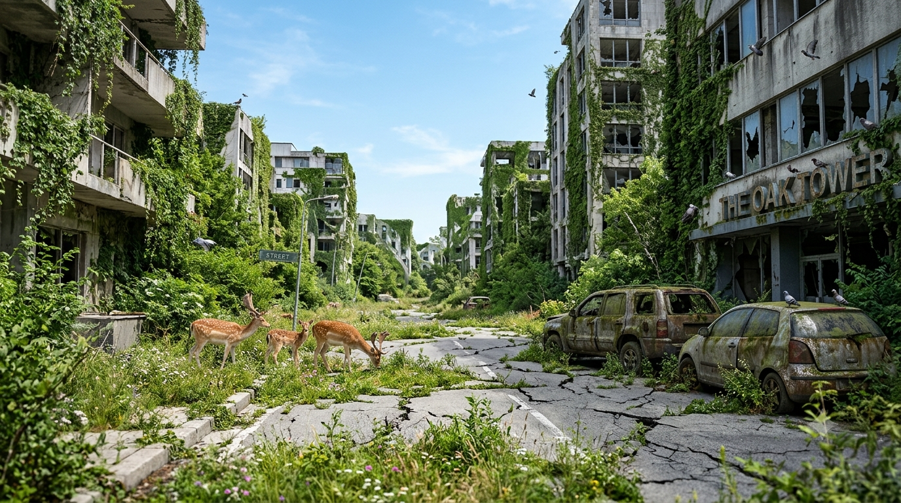
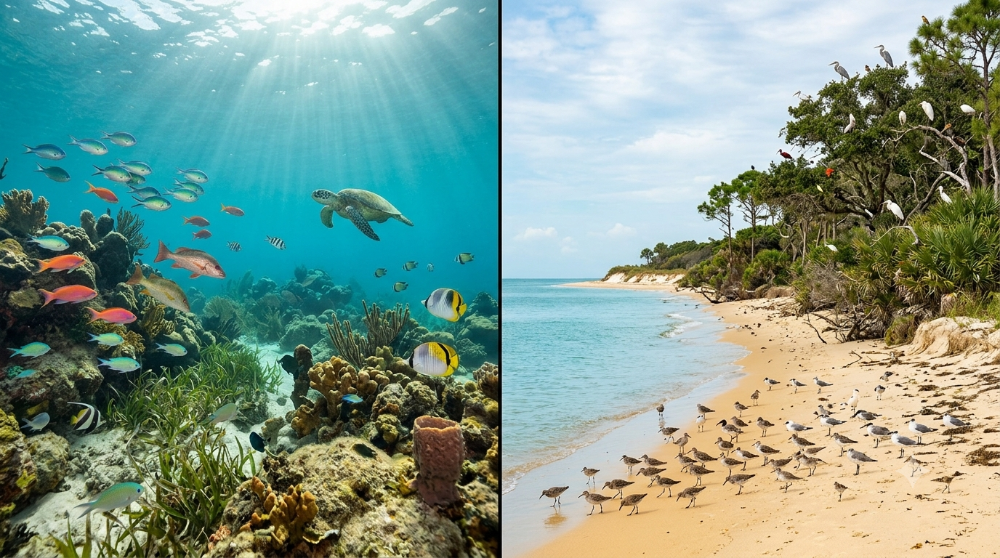

What If All Humans Disappeared? The World Without People

Imagine that every human on Earth vanished at the same moment. No explosion, no plague, no asteroid—just an empty planet with the lights still on, vehicles still moving, dinner left on tables, pets waiting at doors, and machines running without anyone to supervise them. What happens next would be neither instant paradise nor an immediate global wasteland. Some changes would begin in seconds. Others would take decades, centuries, or longer.
The most dramatic early changes would come from systems that depend on people being present: aircraft needing pilots, ships needing crews, fires needing to be controlled, and electrical or water systems needing operators and maintenance. At the same time, nature would not wait for cities to crumble. Animals would explore quiet streets, weeds would grow through pavement cracks, and the absence of fishing, farming, construction, and traffic would begin changing ecosystems.
This is a scientific thought experiment, not a precise forecast. Outcomes would vary by climate, geography, design, and luck. A modern city in a wet climate would decay differently from a desert town; an animal in an open pasture would face different odds from a parrot in a locked apartment. The timeline below describes plausible patterns, not a universal countdown.
- What we are assuming
- The first seconds and minutes
- The first hours
- The first few days
- Weeks and months later
- The first few years
- Decades later
- Centuries and beyond
- Pets and captive animals
- Wild animals and plants
- The oceans and seas
- Weather, pollution and climate
- Would Earth become a paradise?
- At-a-glance timeline
- Sources and further reading
First, What Are We Assuming?
Every human disappears at the same moment, but the event itself does not destroy buildings, switch off machines or harm animals. Nature and technology continue to follow the rules they did a moment earlier. Automated systems may keep working temporarily; equipment that needs fuel, repairs or human decisions will eventually fail.
The timeline is only a guide. Climate, geography, engineering, and local conditions would make outcomes vary widely.
The First Seconds and Minutes
Vehicles lose their operators
Cars, buses and trucks being driven would continue moving until they stopped, crashed or hit something. Some driver-assistance systems could brake, but they cannot handle every situation. Trains might stop automatically or continue under control systems, depending on the railway.
Aircraft and ships face different risks
Aircraft autopilots can maintain a route and control the aircraft, but passenger planes are not designed to make every decision and manage every emergency indefinitely without pilots. Many flights would probably end in crashes or forced landings. Ships could keep moving under engine power or autopilot, but without crews they could not reliably avoid hazards, respond to storms, fight fires or enter ports.
Unattended fires continue
Cooking fires, industrial processes and existing wildfires would not stop simply because people vanished. Sprinklers and automatic fire systems might contain some incidents, while others could spread until they ran out of fuel or met a natural barrier. Some areas would suffer serious fires; the whole world would not burn at once.

The First Hours: Infrastructure Starts Losing Control
Electricity becomes unreliable
Power grids use automatic controls and protection systems, so electricity would not disappear everywhere instantly. But operators are needed to respond to unusual faults, balance the system, manage fuel and arrange repairs. Some areas could lose power within hours; others might remain supplied longer, depending on local generation and grid design. The U.S. Energy Information Administration explains how automatic systems help keep electricity supply and demand balanced.
Nuclear plants shut down—but still produce heat
A reactor does not automatically melt down just because its operators vanish. It may continue running under automatic control until a grid disturbance, equipment fault or safety limit triggers a shutdown. When a reactor trips, the chain reaction stops, but radioactive decay continues producing heat. The fuel must still be cooled. Spent-fuel pools also need water and monitoring, while many dry-cask systems rely largely on passive cooling. Serious, site-specific accidents are possible if essential safety functions fail, but every plant would not fail in the same way. The Canadian Nuclear Safety Commission explains these safety systems.
Communications and navigation gradually lose support
Mobile networks, data centres and internet services need electricity, cooling, fuel for backup generators and eventual maintenance. Some would continue temporarily, but outages would spread as systems failed. GPS is different: satellites can keep broadcasting positioning signals without the public internet, and a receiver with offline maps can still locate itself. However, maps would not update, and satellites and their ground-control systems would not be maintained indefinitely.
Water and sewage systems become vulnerable
Some water networks use gravity, but many cities depend on electric pumps, treatment plants and monitoring. Sewage systems also need pumping and treatment. When power and maintenance fail, water pressure can fall, wastewater can overflow and local supplies can become unsafe.
The First Few Days
Food spoils and supply chains stop
As electricity fails, refrigerators, freezers, warehouses and refrigerated trucks warm up. Food spoils and attracts scavengers, insects and rodents, but it is a temporary resource rather than a lasting food supply. Ports, factories, farms, warehouses and shops would no longer coordinate deliveries. Goods already in transit might continue moving, but normal distribution of food, fuel and medicine would stop.
Some pollution falls; local hazards remain
Vehicle traffic, factories and routine power generation would largely stop, so many short-lived air pollutants would decline. Fires, chemical leaks, fuel spills and damaged industrial sites could still create dangerous local pollution.
Weeks and Months Later
Water, buildings and public infrastructure deteriorate
Pumping stations and wastewater plants would fail where backup systems run out. Some areas would lose water pressure; underground spaces could flood if drainage and groundwater pumps stop. Buildings would not collapse immediately, but blocked drains, roof leaks, broken windows and unreported damage would accumulate. The speed would depend on weather, materials and design.
Farming stops and livestock face a harsh transition
Annual crops would not be replanted, irrigated or harvested. Some might produce seed, while orchards and perennial plants could persist longer. Livestock trapped in sheds or fenced facilities could die from lack of food and water; animals that escape might become feral, though survival would depend on climate, predators and available forage.
Industrial sites can cause local contamination
Fuel tanks, chemical stores, mines and waste sites would be left without inspection or repair. Corrosion, flooding, fires or failed seals could release contaminants. Some would break down; others could remain in soil or groundwater for years. These would be uneven local hazards, not a planet-wide toxic blanket.
The First Few Years
Cities become overgrown in patches
Grass, weeds, shrubs and young trees would spread through roads, car parks, gardens and abandoned fields where rainfall and soil allow. Warm, wet places could change quickly; deserts, tundra and dense city centres would change differently. Cities would not turn into deep forests overnight.
Roads, bridges and dams slowly deteriorate
Water, corrosion, vegetation and freeze-thaw cycles would damage roads and structures. Bridges and dams would need inspection and maintenance, but they would not all collapse on a fixed schedule. Failures could cause severe regional flooding or change river systems, while many robust structures would remain for decades.

Decades Later
Many buildings would lose roofs, windows, seals and drainage. Water damage, corrosion, rot, insects and occasional fires would make more structures unsafe. Some concrete and stone structures could remain recognizable much longer, while lighter buildings might disappear sooner.
Wildlife could recover in places freed from hunting, traffic, construction and intensive farming. Large animals might return to former human areas, but threatened species would not automatically recover: habitat loss, invasive species, disease, pollution and climate change would remain. Feral dogs, cats, pigs, goats and other domestic animals might establish populations in some regions, sometimes putting pressure on native wildlife.
Rivers could shift, wetlands could return to drained areas, and coastlines would change as storms and sea levels reshape them. Large dams and other infrastructure could continue influencing landscapes for many decades.
Centuries and Beyond
Human structures would leave an uneven archaeological trace. Wood rots or burns, steel corrodes, and concrete cracks, but buried structures, stone monuments and protected buildings could last much longer. There is no universal countdown for the disappearance of a city.
Plastic would fragment rather than vanish. Some industrial chemicals and radioactive materials would persist according to their individual properties and decay rates. Carbon dioxide already released would continue affecting climate, and oceans and ice sheets would respond slowly. Life would keep evolving, but Earth would not return to a pristine pre-human state.
What Happens to Pets and Captive Animals?
Animals that depend on direct human care would face immediate danger. Pets locked indoors or in cages could run out of food and water. Aquariums and temperature-controlled enclosures could become unlivable when pumps, filters, heating or cooling fail. Some animals might escape; many would not.
Free-roaming dogs and cats would have a better chance of finding food outdoors, but survival would depend on their health, abilities, climate, predators and the disappearance of human food scraps. Zoo animals and livestock would face similar choices: escape and adapt, or remain trapped without feeding, veterinary care and maintenance.
Wild Animals and Plants: Mixed Outcomes

Many wild animals would benefit from the end of routine hunting, fishing, logging, road traffic and construction. Some would enter suburbs and cities that had been noisy or dangerous. Plants would colonize abandoned farmland and paved areas where conditions allow.
Not every species would benefit. Animals that rely on crops, rubbish or other human food sources would lose them. Invasive species would remain, predators and prey would rebalance, and disease, competition and climate would continue shaping populations. Ecosystems would reorganize, not simply become peaceful or uniformly richer.
What Happens to the Oceans?
Commercial fishing and most ship traffic would stop, giving many marine populations relief from major human pressures. Some fish and marine mammals could recover over years or decades, depending on reproduction and habitat.
Lost fishing nets and traps could keep entangling animals for years, and abandoned ships or facilities might leak fuel. Plastic would remain and fragment. Ocean warming, acidification and existing contamination would continue long after people disappeared. NOAA describes the persistent harm caused by derelict fishing gear.

Would Weather and Climate Change?
Weather would continue. Storms, monsoons, droughts, heat waves and snow are driven by natural processes, not by human activity. Many forms of routine air pollution would decline, although fires and industrial accidents could cause local pollution.
Climate change would not reset. Carbon dioxide already in the atmosphere would continue influencing temperatures, while oceans and ice sheets respond slowly. Sea level could keep rising for centuries even after emissions stopped. The Royal Society explains why stopping greenhouse-gas emissions does not quickly restore the climate of the past.
Would Earth Become a Paradise Without Humans?
No. Many wild species would benefit from reduced human pressure, but pets and livestock would suffer, infrastructure would fail, and existing pollution and climate change would remain. Earth would keep supporting life, but it would become a different, unevenly changing world—not a perfect return to untouched nature.
At-a-Glance Timeline: The World After People
| Time | Likely changes | Important caveat |
|---|---|---|
| Seconds to minutes | Unattended vehicles lose drivers; aircraft and ships lose crews; existing fires continue. | Not every vehicle crashes or fire spreads. |
| First hours | Grid faults, communication failures and water-system problems begin. | Automation keeps some systems running temporarily. |
| First days | Food spoils and supply chains stop; pets and captive animals face danger. | Outdoor animals and local systems vary. |
| Weeks to months | Pumping, treatment, farming and maintenance decline; local industrial hazards emerge. | Buildings do not collapse everywhere at once. |
| Years to decades | Vegetation spreads, structures deteriorate and some wildlife populations recover. | Climate, invasive species and pollution still matter. |
| Centuries and beyond | Many structures decay; long-lived contaminants and climate effects remain. | Some monuments and protected structures last much longer. |
This is a broad guide, not a precise schedule. Each region, species and facility would follow its own path.
Sources and Further Reading
This is a hypothetical scenario, not a forecast. These sources provide background on infrastructure, ecology and climate processes discussed above.
- Scientific American — “An Earth Without People”. A broad exploration of how human-built environments could change after humans disappear.
- U.S. Energy Information Administration — Introduction to the U.S. Electric System. Background on grid balancing and automatic protection systems.
- Canadian Nuclear Safety Commission — Nuclear Power Plant Safety Systems. Explains automatic reactor shutdown and the need to remove decay heat.
- NOAA — Derelict Fishing Gear. Explains how lost nets and traps can continue harming marine life.
- The Royal Society — What happens if greenhouse-gas emissions stop?. Explains why climate and sea level do not quickly return to earlier conditions.
This article describes a hypothetical scenario, so exact outcomes and timelines cannot be known. The sources support the general mechanisms discussed, not every speculative event or date. Use the timeline as a guide to plausible changes, not as a guarantee that every location would follow the same sequence.
Suggested Quizzes
Test your knowledge of survival scenarios, fictional worlds, and preparedness.